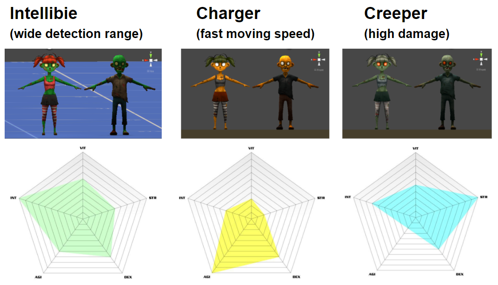

Mahidol University Augment Reality (MUAR) is a mobile Augmented Reality shooting game and campus guide of Mahidol University Salaya Campus. It aims to provide the users with information about the campus in an innovative and enjoyable way.
Discover
The Problem
After talking to several of our cohorts, we discovered that many of us did not know a lot about the campus despite spending almost 4 years at school. Since the campus covers a large area, it is difficult to learn about where all the faculty buildings and services are located. In most cases, facility members, students, and staffs are only familiar with a few specific areas on the campus. Many lacks the motivation to explore the other areas on campus and may miss out on some great opportunities and experiences available.
Project Objectives
- To provide an innovative way of learning about the school’s campus.
- To explore the use of AR technology on mobile platform.
- To provide entertainment through game story and the challenges throughout the game.
Define
Application Features
Our users have two separate goals in using the application - to either find out specific information about the campus or to play the game. Hence, we define the MUAR app to include two modes
- The Information Modeoffers a full 3D model of the campus in which users can select a building to view its information, select a category filter, and view tram routes.
- The Game Mode centers on an intriguing story of the campus being invaded by zombies, where the player takes the role of the defense team. During game play, the player has to aim and shoot the zombies with the cross hair in the center of their camera on an augmented model of the campus buildings in order to complete the mission objectives.
User Flow
From the finalized list of functions, we created a flow of how the user would interact with the app, as well as how the app would respond and progress.
Design
Branding
MUAR is an abbreviation for Mahidol University Augmented Reality. The acronym of the name (MUAR) also mimic the sounds that zombies make during the gameplay.
To promote playfulness, we decided to go with a cartoon-like theme. We designed the background panels in grey scale with colorful buttons and texts for better contrast and readability. This theme is used throughout the application for branding and consistency.
Because the application is to be deployed on the mobile device platform, we focused on using big and clear fonts. For long texts, such as descriptions of the buildings and story of the missions, we utilized scrollbar views for minimal on-screen space usage.
Missions
Each mission is based on a real site on campus, prompting players to learn more about the buildings in the area.
Characters
To add to the excitement and variety of the game, we designed three different types of zombies -- each with its unique status which can be identified by their color and movement behavior.
The victim is depicted by a girl character in school uniform. After the prolonged Apocalypse victims may become injured and can only manage a slow wounded-walk.
Weapons
To give the players more options during their play, we designed 3 types of weapons, each with their own strengths and weaknesses.
Database
Client-side DB is used for storing information on buildings and missions and runs on SQLite 3.0.
Server-side DB is used for data synchronization & high scores. It runs on Linux CentOs 5.1 with Apache 2.4.4, MySQL 5.1.68, and Php 5.3.27 installed.
Activity Diagrams
Login & Registration
View Highscore
Implementation
The game is implemented using Unity3D and marker-based AR technology.
Main Screen & On-Boarding
To facilitate first time users, we created tutorials on how to use the information mode and how to play the game. These tutorials are accessible from the main menu of the app.
Information Mode
The user can choose to either view the map in 3D AR mode or 2D top-view mode. The user navigates in 2D mode by dragging and pinch zooming.

Game Mode
The player selects a mission and scan the AR marker to start the game. The player navigates around the map and aims with the cross-hair at the center of the screen by moving their camera around and shoots by tapping on the screen. After completing a mission, the player can share the scores online.
Reflection
Looking back at the project 4 years later, this is one of my most proud (and fun!) projects from my undergraduate years as a computer science major. I’m very happy with what my partner and I were able to accomplish within roughly 3 months — bittersweet memories of sleepless nights included. Lastly, I’d like to share some key take-aways I learned from this project:
1. Spend more time conducting user research & defining the root of the problem.
Since this project was mostly focused on the application design and implementation, we did not had the chance to dive deeper into the problem and user context. It would’ve been great for us to conduct interviews and surveys to gain insights and make better informed design decisions.
2. When using Marker-based AR technology, make sure the marker is easily accessible in the appropriate context.
The biggest drawback we received from this project was the need to have a printed out version of the marker in order to use any 3D modes. In our case, none of our users would be carrying around a printed out piece of the school’s logo on a daily basis. We can consider basing our marker off available brochures or campus maps that were handed out to all students.
3. Don’t be afraid to just go for it!
My partner and I were inspired by the ARhrrr! project we found on YouTube. Although we had reservations about our capabilities, we decided we to push our limits and see what we can do. It was our first time with Unity3D, AR, full-fledged game design, server-side scripting, etc. But despite the sleepless nights, it was one of the most enjoyable learning experiences I’ve ever had.